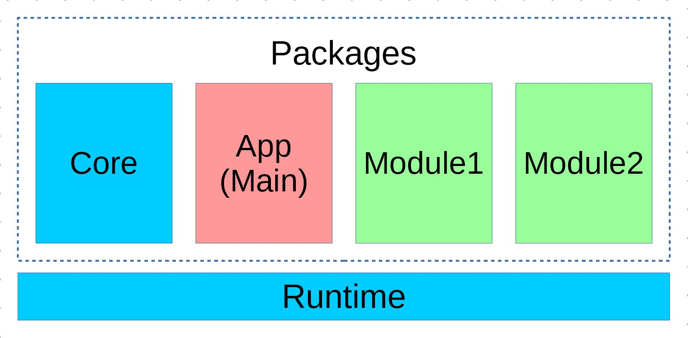

架构简述
- 一个基于 Combi 框架的应用程序由
Runtime容器和若干Package(包）组成。 -
Package均以pid作为名称，注册在Runtime容器中。 - 所有 Combi 应用都依赖于 Combi 核心库，核心库提供了框架所必须的基础库，包括了Runtime，Core包以及Chord命令行支持。
- 运行具体应用时，需要指定一个 Package 作为主包
Main Package。主包有权覆盖其他Package内的配置文件等资源。

运行时对象
Runtime的单例会在引用框架时创建，建议使用rt别名访问其单例。以下代码获取了Runtime的单例实例，并从中获取pid为app的包对象：
use Combi {
Runtime as rt
};
$runtime = rt::instance();
$package = $runtime->app;
Runtime提供了魔术方法，可以调用静态方法的方式快捷获取注册在其中的包对象，如上面的代码可写成：
$package = rt::app();
Runtime的主要方法
Runtime对象内置了少量方法，在命名包对象pid时，请注意避免下列名称。
| 用例/方法 | 说明 |
|---|---|
rt::main() |
获取主包对象 |
rt::isProd() |
是否是生产环境 |
rt::env($name) |
获取环境配置变量值 |
rt::register($package) |
注册一个包 |
rt::up() |
启动框架 |
包对象 Package
包是构造combi应用的基本颗粒，一个包中会包括代码、配置、资源等业务所需的文件，并通过composer被其他包引用。在推荐状态下，一个Package对应一个composer项目。
按规范开发的包应用，只需要在composer中引用即可自动初始化供使用。因此在composer.json中要注意引用顺序，combi核心库应该放在其他引用包之前。
当开始构建一个新的combi包的时候，需要创建一个Package包对象：
namespace My\Zone;
class Package extends \Combi\Package
{
protected static $pid = 'myZone';
}
包的门面对象必须放置于包所在空命空间的根下，否则部分功能可能不能正常工作。
之后，如果包被正确注册到runtime对象中，则可以这样访问到包实例：
$package = rt::myZone();
Combi建议使用camelCase风格对pid进行命名。
访问Package对象
使用包容器
可以简单地把包看作一个容器，把包内业务中需要用到的对象/变量等存放进去。
rt::myZone()->timeout = 30;
rt::myZone()->user = new \stdClass();
rt::myZone()->handler = function(): \stdClass {
$handler = new \stdClass();
$handler->isRaised = true;
return $handler;
};
var_dump(rt::myZone()->timeout); // print int(30)
var_dump(rt::myZone()->user); // print a std object
var_dump(rt::myZone()->handler); // print a std object with proporty is_running
如上所示，除了直接放入变量，包容器支持传递一个闭包，这样只有在第一次访问此属性时才会进行初始化，之后的访问只会返回闭包执行后的结果。
注意，只支持传闭包对象
Closure进行初始化，带__invoke()的对象不会在第一次访问时触发__invoke()方法并替换原对象。
基础方法
Package类作为包的核心，也可以提供一些与包功能相关的基础方法。比如默认的Http服务脚手架，就给App Package类添加了runByCgi()这个方法。
rt::app()->runByCgi();
预留方法
Package基类有一些预留方法。
| 用例/方法 | 说明 |
|---|---|
Package::instance() |
返回包实例 |
Package::pid() |
返回包的pid |
Package::path($category, $path) |
根据配置和路径获取路径字串 |
Package::dir($category, $path) |
根据配置与路径返回一个资源目录对象 |
Package::logger($channel) |
根据配置获取包中定义的日志对象 |
Package::dict($name, $key) |
根据语言包配置获得翻译结果 |
Package::config($name) |
获取配置 |
Package::get() & Package::set() |
扩展容器基类功能 |
core核心包
Combi框架中的基础服务由Core包提供，比如以下代码可以获取当前格式化后的时间：
echo rt::core()->now->format('Y-m-d H:i:s');
Core::$now是一个会随着每次任务自行更新的当前时间对象，之后介绍的大多数功能也是由Core包提供的。
框架的启动
这里介绍一下框架的启动方式。
包内的src/目录下的文件一般为框架引导文件，其入口文件建议为bootstrap.php，通过在composer.json的autoload域中注册自动载入，因此combi包一旦在composer中引用，即会自动载入并初始化。
例如：
"autoload": {
"psr-4": {"My\\Zone\\": "src/classes/"},
"files": [
"src/bootstrap.php"
]
},
bootstrap.php
bootstrap.php作为包的引导入口，一般的内容如下：
namespace My\Zone;
use Combi {
Runtime as rt
};
rt::register(Package::instance(__DIR__),
'dependencies', 'helpers', 'hooks', 'routes');
调用包门面对象创建包对象的单件，之后通过rt::register()方法将包注册进runtime。register方法后面支持填入多个src/同目录下的php文件名，这样在使用rt::up()方法启动框架时，会按序载入这些引导文件。
引导文件分类建议
src目录下的其他引导文件，可能会有以下这些类型：
| 文件名 | 作用 |
|---|---|
| dependencies.php | 非DI服务的依赖库初始化 |
| hooks.php | 勾子注册与配置 |
| helpers.php | 辅助方法声明 |
| routes.php | HTTP路由声明 |
| commands.php | chord指令声明 |
启动框架
在具体应用的入口文件中，可以用以下代码启动combi框架。
use Combi\{
Runtime as rt
};
$loader = include __DIR__.'/../vendor/autoload.php';
rt::up('app', require __DIR__.'/../env.php');
以上代码假设位于combi项目的public/目录中，调用了rt::up()方法，指定了pid为app的包作为主包来启动框架。
需要注意的是，在上代码仅为框架启动，之后框架的各个模块，以及所载入的包都处于可用状态。但并不意味着业务进入工作状态，如果需要提供http服务，或是其他类型服务，还是需要调用对应的模块执行代码。